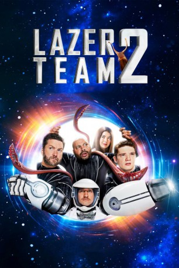

#10631 Lazer Team 2 *Englisch*
 
 IMDB-Wertung: 6.2 / 10
IMDB-Wertung: 6.2 / 10  Metascore: 0
Metascore: 0 
A few years after Lazer Team has saved the planet from Aliens, Woodrow "Woody" Johnson was kidnapped, and is now lost somewhere in the Galaxy. A girl by the name of Maggie has received an encrypted alien file that leads into Woody's kidnapping, And now Lazer Team must try and find him.
nur Englisch
Jahr: 2018
Dauer: 84 Minuten
FSK:
Land: USA Studio: Rooster Teeth ProductionsTonspuren:
Untertitel:
Auflösung: 1080p (1920x808) Größe: 6717 MB
Genre: Sci-Fi
Regisseur: Daniel Fabelo, Matt Hullum
Drehbuch: Burnie Burns, Daniel Fabelo, Matt Hullum
Soundtrack: Carl Thiel
Darsteller:
- Burnie Burns als Hagan
- Gavin Free als Woody
 Colton Dunn als Herman
Colton Dunn als Herman- Nichole Bloom als Maggie
- Victoria Pratt als Kilborne
- Gus Sorola als Mr. Scientist
- Alexandria DeBerry als Mindy
- Ashley Jenkins als RTN News Anchor
- Joel Heyman als Reporter #1
- Barbara Dunkelman als Reporter #2
- A. Smith Harrison als TV Announcer
- Judy Branning als Reporter
- Rob Bullock als Television Camera Operator
- Cotie Domm als Soldier
- Daniel Giordano als Soldier
- Jeffery Gray als US Army Sergeant
- Nina Hargis als Soldier
- Matt Hullum als Arklosh
 Gregory Kelly als Worg
Gregory Kelly als Worg- Jack Lee als Channing Rosewood
- Patrick Lescarbeau als Reporter
- Stan Taylor als Civilian official
 Gary Teague als Reporter
Gary Teague als Reporter- Billy Tilk als Alpha team solider
- Drew Law als Soldier (uncredited)
- Michael Jones als Zach
- Kirk C. Johnson als Officer Vandenbloom
- Robert Steven Brown als Soldier
- Drake Foley als Soldier
- Hunter Gustafson als Reporter
- Shaaheen Karabi als Reporter
- Gregory Charles Lane als Reporter
- Greg Miller als Ralph
- Bobby Lee Osborn als Soldier
- Danu Uribe als Doulos / Receptionist
- Andrew Blanchard als Soccer player (uncredited)
- Tyler Coe als Football player (uncredited)
Datei: X:\2-Dilogie(G-M)\Lazer Team\Lazer Team 2 Englisch (2018, FSK, 1920x808).mkv seit 04.02.2019
Festplatte: HD Collection-2(A-Z)-3(A-M)
 Alle Filme aus Gruppe '2-Dilogie(G-M)\Lazer Team'
Alle Filme aus Gruppe '2-Dilogie(G-M)\Lazer Team'
- Lazer Team
- Lazer Team 2 *Englisch* (der aktuelle Film)